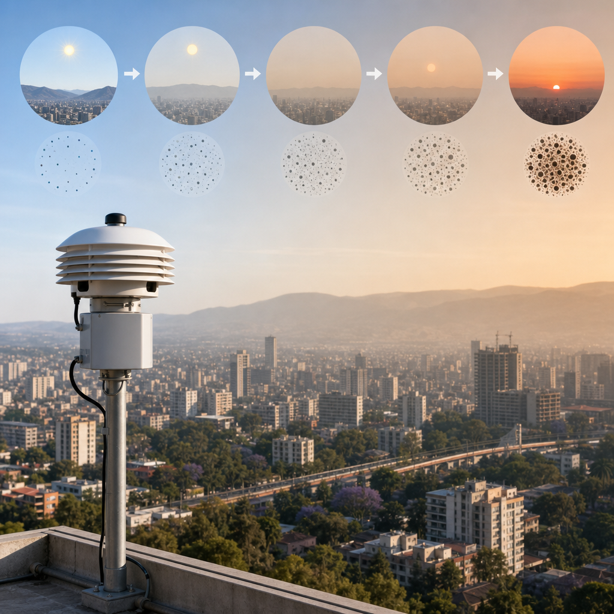

Un sensore sul tetto osserva il particolato fine ad Addis Ababa
Dieci sensori del progetto MAIA misurano come cambia durante il giorno e nelle stagioni l’inquinamento dell’aria nella capitale etiope.
Su un tetto di Addis Ababa, capitale dell’Etiopia, è installato un sensore che osserva l’aria della città. È uno dei dieci strumenti impiegati dalla NASA nell’ambito di MAIA, il Multi-Angle Imager for Aerosols: un progetto che studia la qualità dell’aria urbana. Il suo obiettivo è raccogliere misure dettagliate del particolato più piccolo, per capire come la presenza degli inquinanti cambi nel corso della giornata e delle stagioni.
L’attenzione è rivolta in particolare al PM2.5, cioè al particolato formato da particelle con diametro pari o inferiore a 2,5 micrometri. Si tratta di una delle forme più letali di inquinamento atmosferico nel mondo. Alcune di queste particelle sono abbastanza piccole da poter entrare nel flusso sanguigno umano: un aspetto che aiuta a comprendere perché le misure della loro presenza nell’aria siano importanti.
Il ruolo del carbonio nero
Ad Addis Ababa una componente importante dell’inquinamento da particolato è il carbonio nero, chiamato anche fuliggine. È prodotto dai veicoli diesel, dagli incendi e da altre fonti di combustione. Fra le molte forme di PM2.5, il carbonio nero è stato collegato in particolare a effetti sul basso peso alla nascita, sullo sviluppo del cervello, sulle condizioni respiratorie e sulla mortalità prematura.

Misure che seguono il ritmo della città
I sensori MAIA non si limitano a indicare la presenza del particolato: le loro misure dettagliate mostrano come l’inquinamento vari a seconda dell’ora e della stagione. In questo modo possono emergere anche picchi associati al traffico nelle ore di punta e alle celebrazioni delle festività. Il dato non descrive quindi un’aria immutabile, ma una situazione che può cambiare nel tempo, insieme alle diverse sorgenti di emissione.
Lo studio condotto ad Addis Ababa riguarda una città precisa, ma i risultati sono rilevanti per le città di tutto il mondo, comprese quelle degli Stati Uniti. Osservare con dettaglio quando si verificano gli aumenti del particolato e quali componenti sono presenti offre un quadro più vicino alle variazioni effettive dell’aria urbana.
Dieci sensori MAIA sono usati ad Addis Ababa per studiare la qualità dell’aria. Misurano il PM2.5, particelle di diametro pari o inferiore a 2,5 micrometri, e aiutano a individuare le variazioni legate all’ora del giorno, alle stagioni, al traffico e alle festività. Il rapporto State of Global Air del 2025, citato nella ricerca, stima che queste particelle siano associate a circa 4,9 milioni di morti in eccesso ogni anno nel mondo.
Il sensore sul tetto fa parte di questo lavoro di osservazione ravvicinata. Attraverso strumenti distribuiti nella città, MAIA analizza un inquinante che può essere estremamente piccolo ma che è associato a conseguenze rilevanti per la salute. La fuliggine, in particolare, è una componente del particolato presente ad Addis Ababa e collegata a diverse fonti, dai veicoli diesel agli incendi. Misurarla nel dettaglio significa seguire le variazioni dell’aria nei momenti e nelle stagioni in cui esse si manifestano.
Questo articolo l'hai letto sul blog di Meteo Radar: un'app che ti mostra da dove vengono i numeri, invece di limitarsi a dartelo. E ogni mattina ne trovi uno nuovo come questo.